Guardián de historias · Tejedor de mundos · Hijo de muchos sueños
SANTOS ARMADA
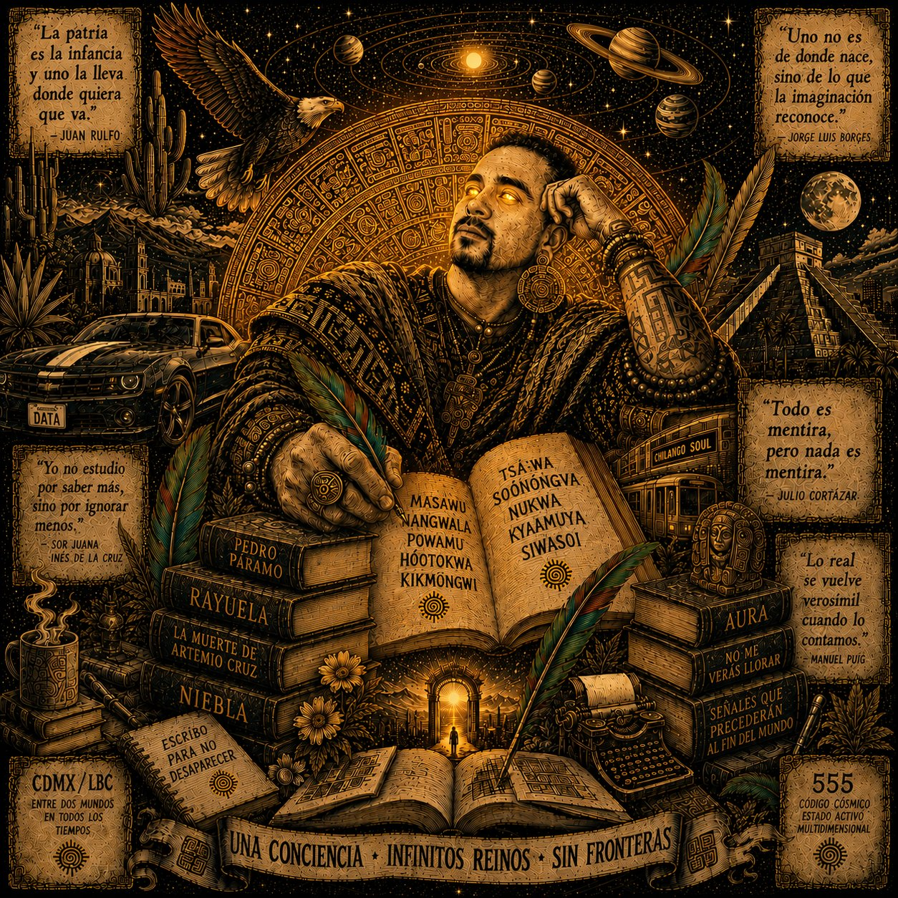
Una conciencia · Infinitos reinos · Sin fronteras
"La patria es la infancia y uno la lleva donde quiera que va."
— Juan Rulfo
"Yo no estudio por saber más, sino por ignorar menos."
— Sor Juana Inés de la Cruz
"Todo es mentira, pero nada es mentira."
— Julio Cortázar
"Lo real se vuelve verosímil cuando lo contamos."
— Manuel Puig
Explore the Armada
Una armada de conocimientos — para todos que anden buscando
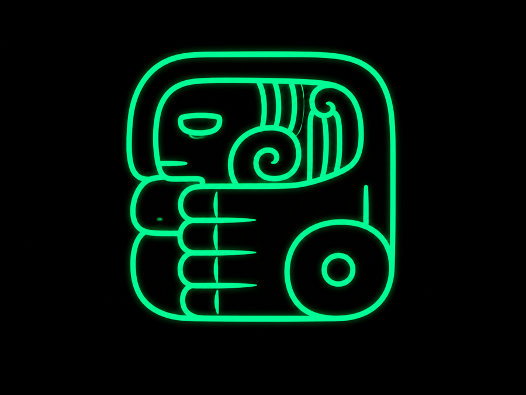
Essays
Original literary writing
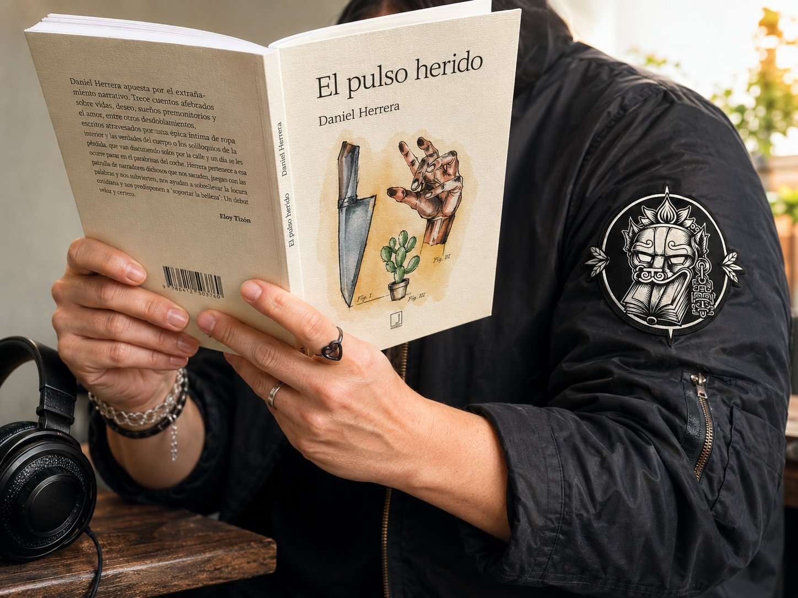
Audiolibros
Books read aloud
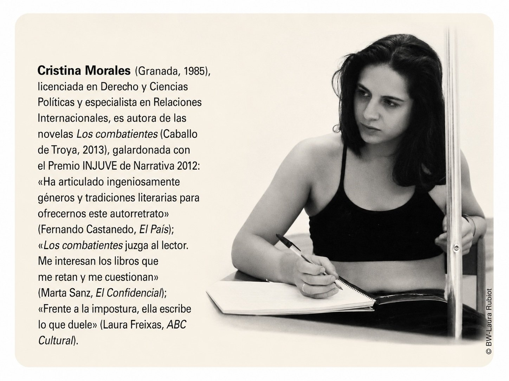
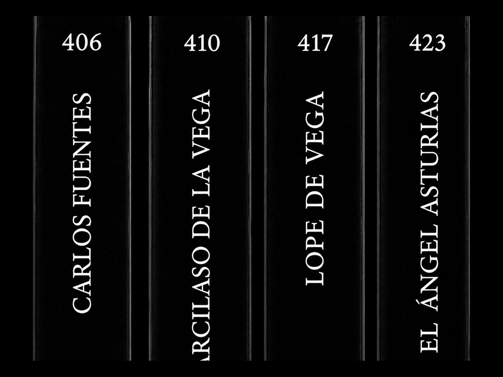
Book Reviews
Rated in quetzal feathers
Space and Time
700 AD to now
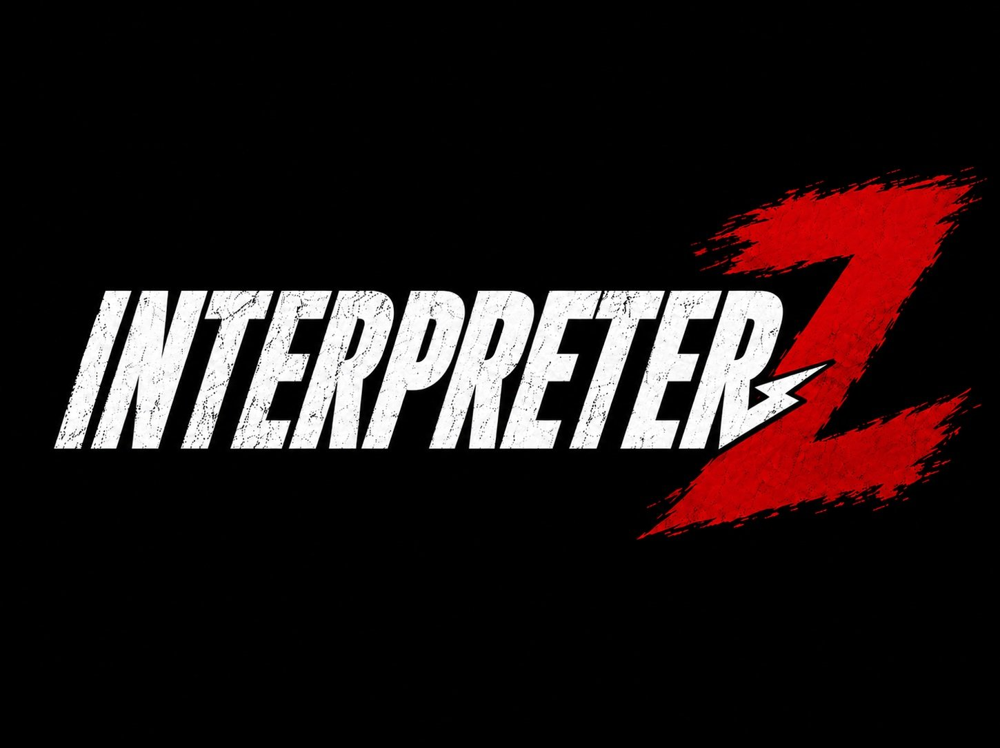
Interpreter Z
The craft of language
Tacos de ojo
Visualized storytelling
Libritos
Read by the next generation
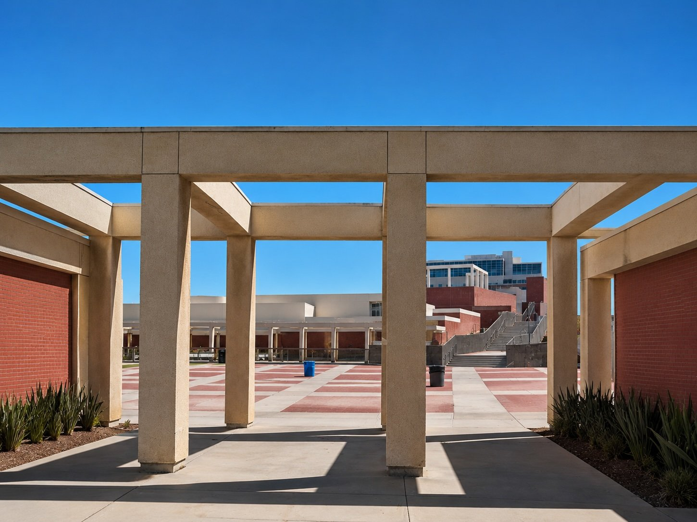
Academia
Research + Journals
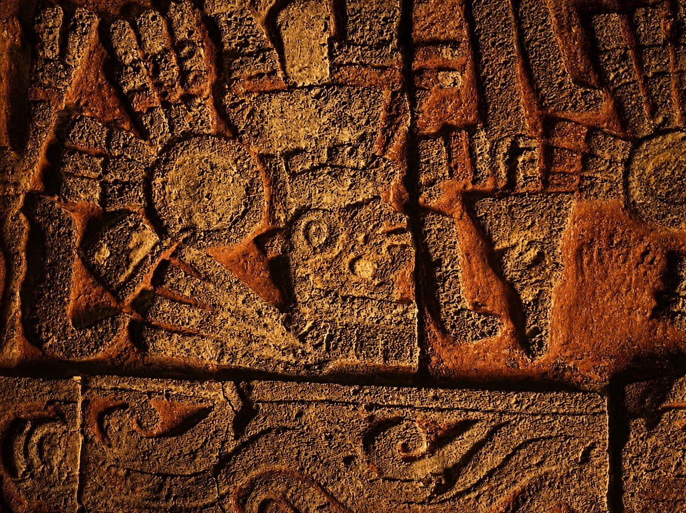
Museos
Reflexiones culturales
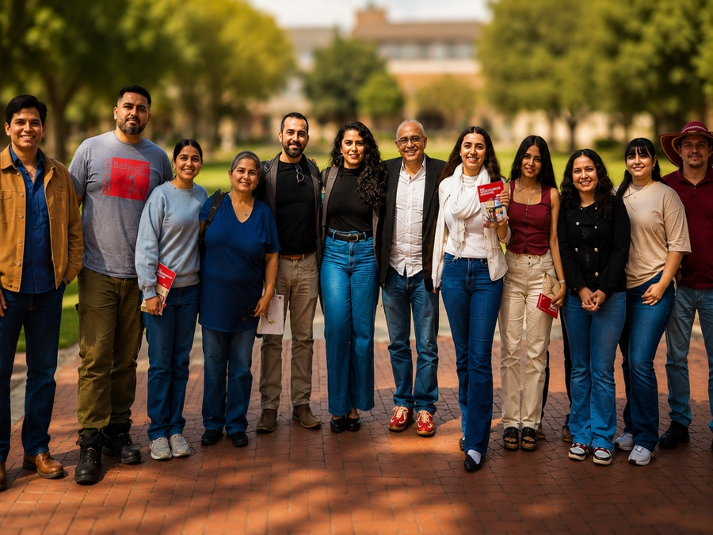
Conferencias
Talks & events
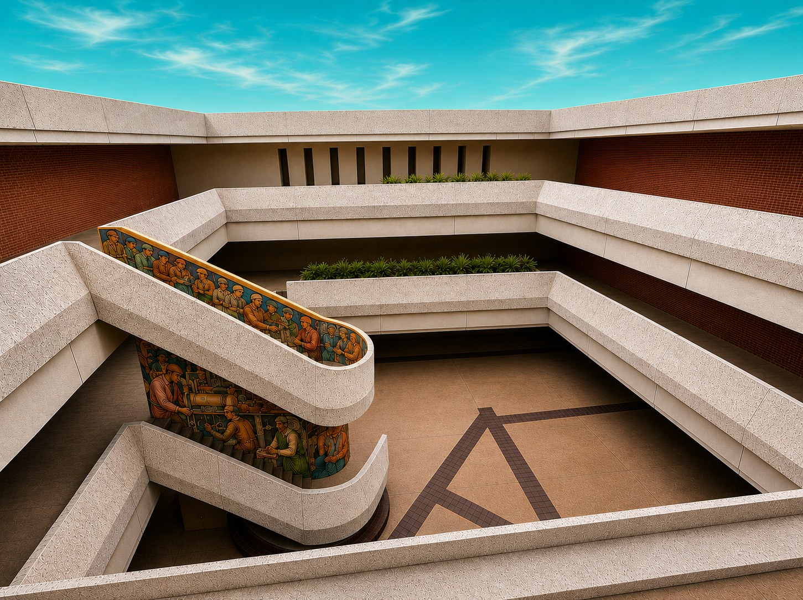
El Cubo
Eventos · Memorias · Vida
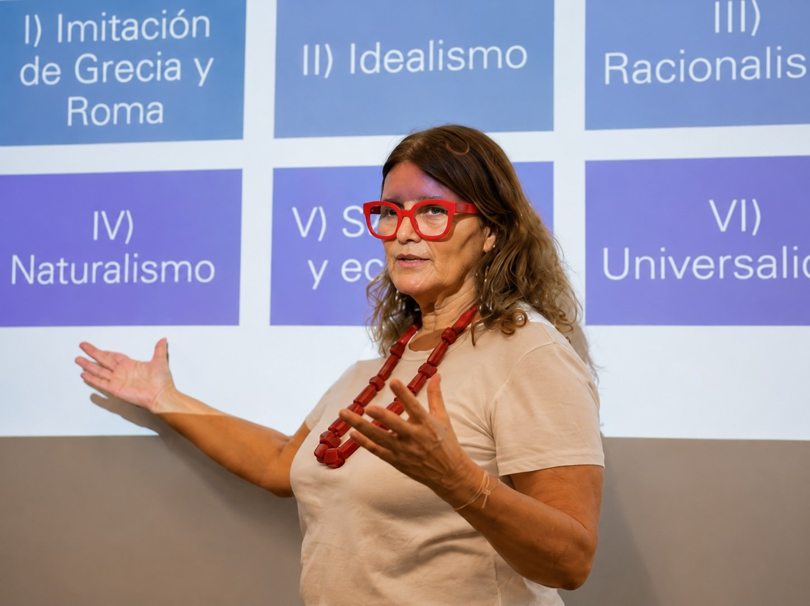
Presentaciones
Slide decks & talks
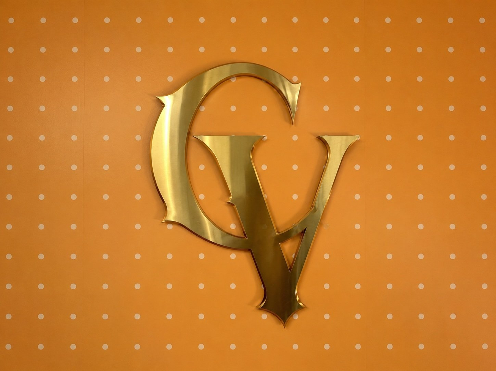
Curriculum Vitae
Scholar · Interpreter · Writer
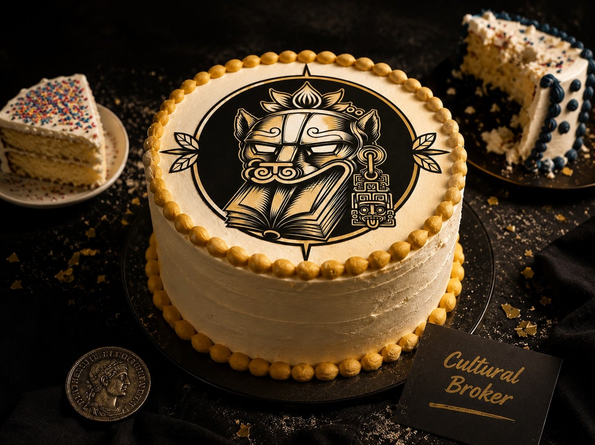
Mercadeo
Merch · Rentals
Archives
Archival research & primary sources